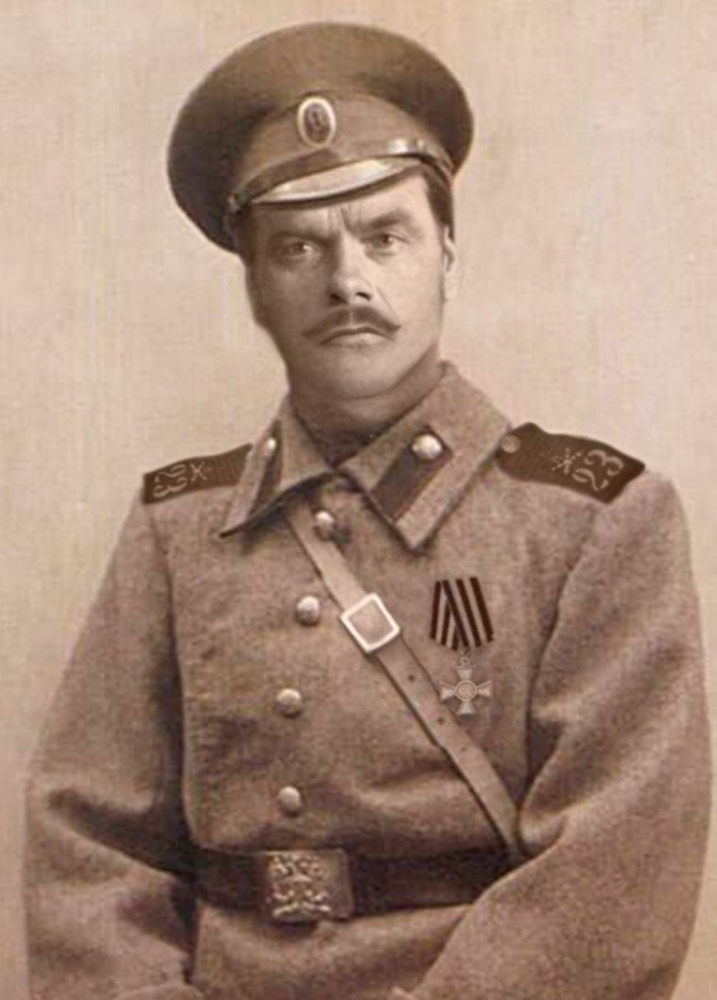

Разгаданные семейные тайны
Gelöste Familienrätsel
Кейсы выхода на место исхода, нахождения родственников, восстановления рода, любыми методами, не только через ДНК.
-
Найти рядового Бокиджона
Советский военнопленный бежал из немецкого лагеря на острове Джерси и два года прятался у местных фермеров. Архивный поиск помог установить его личность и найти внуков в Узбекистане, 81 год спустя.

-
Как я нашёл утраченную награду прадеда: Георгиевский крест
Отец потерял Георгиевский крест прадеда ещё мальчишкой в 1965 году. Совпадение на Familio, звонок незнакомца и поездка в Волгоград вернули награду в семью 60 лет спустя.
